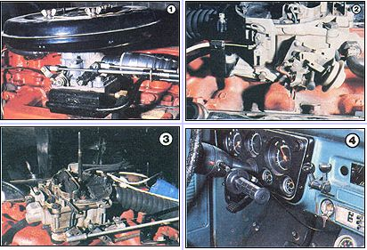

Staff Photos
[1] The modified Ford Autolite/Motorcraft 5200 carburetor mounts to our 6-cylinder Chevy sawmill powerplant with a home made adapter box. [2] The air/fuel ratio on our truck's V-8 engine can be regulated, in the wood-gas mode, by a control cable connected to the secondary choke flap. [3] Here's the dual fuel Quadrajet after doing 15,000 miles on our Chevy's V-8. [4] A twist-grip throttle and two bicycle shift levers serve as inside-cab wood-gas controls.